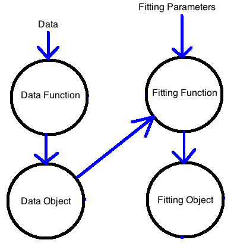
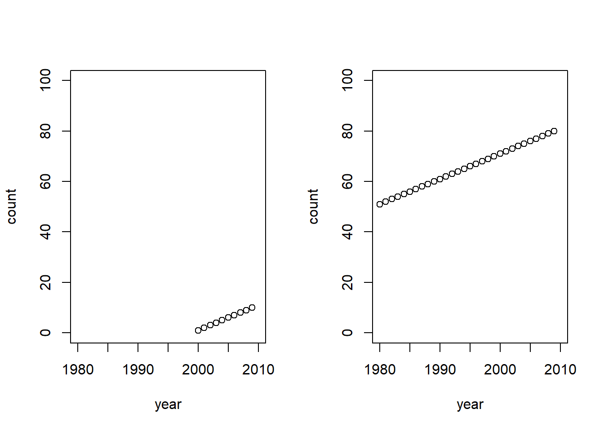
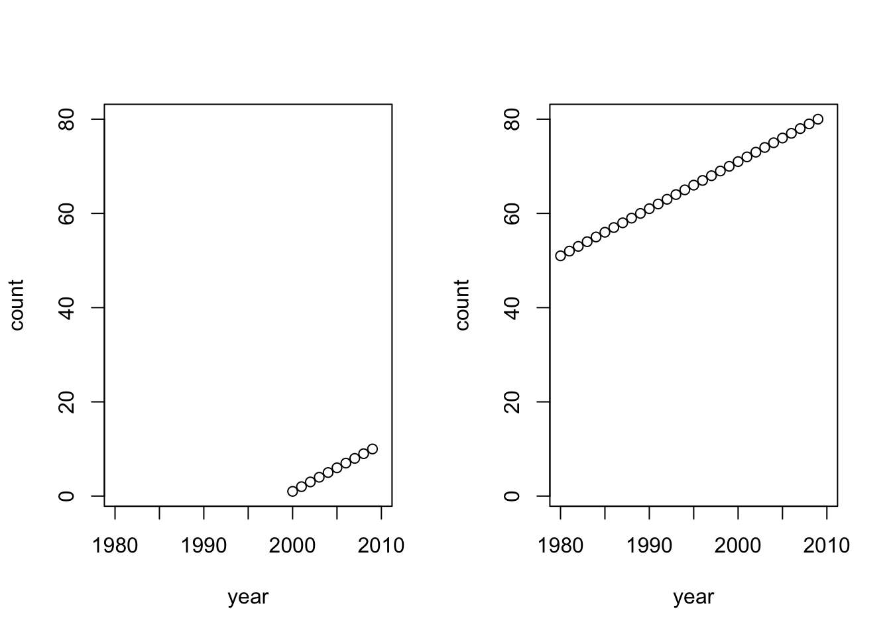

Week 2. More Git + Better Coding Practices
| Compartmentalized | Documented | Extendible | Reproducible | Robust |
Overview
This week I will cover more Git topics and basic coding habits that I have learned over the years. These are good habits that will help make your code less buggy and easier to extend.
Git, GitHub, GitLab
- How to clone someone else’s GitHub or GitLab repository
- How to clone your own repository–when you want to make a copy and use that as a template for something new.
- What are branches, merge conflicts and pull requests?
- Fork or clone? What’s the difference?
- How to add Git to an existing RStudio project and get that on GitHub or GitLab.
Coding Tips
- How to organize and plan your code and why adopting an ‘object-oriented mindset’ will help your code organization (regardless of whether you use object-oriented coding)
- What are namespaces and why you should use
::to call functions. - Tips on writing code and functions in R - little things that will make your code better and more robust
- Tips on things to avoid in your R code, i.e. quirks of R that will tend to create bugs
Code Organization
R is object oriented
Run this code.
fit <- lm(dist ~ speed, data=cars)
class(fit)## [1] "lm"“lm” is the class of the object “fit”. R knows things to do with objects of class “lm”.
coef(fit)## (Intercept) speed
## -17.579095 3.932409It did that because there is a function coef.lm and R looks for that to see what to do when you pass a “lm” object to coef().
All object of class “lm” are a list with a standard set of items in that list:
names(fit)## [1] "coefficients" "residuals" "effects" "rank"
## [5] "fitted.values" "assign" "qr" "df.residual"
## [9] "xlevels" "call" "terms" "model"That information contains all the information about the fit, the data used for the fit, and the call to lm(). We can just pass fit to print(), plot(), summary(), etc. I could write a new function, foo.lm, to do something new with a “lm” object.
In the call to lm, we had another object, saldat. saldat is class data.frame. lm() knows what to do with data that is a data frame.
Object-oriented mindset
Let’s look at salmon.R. What sort of elements are in this script?
- data
- fits
- predictions
- plots
But the elements are not like “objects”. One data set is a data frame with column headings year, wild, flow, temp and the other is a matrix with years as column headings. The fits are all different types and some have no info about what years or data I fit to (see e.g. fit3). The plots have to be tweaked based on the data and the fits.
Instead we would like to work with “objects” that have a consistent format and have all the information needed for functions that use those objects.

An object
- Has a standardized form (you can describe what elements it needs to have)
- Has all the information that subsequent functions might need to use this object.
- Has information so you know how this object was made
How on earth is one supposed to do this?
…if it is even worthwhile, which I’m not so sure about…
This is part of code organization. Time put into planning and standardizing your code will make you much more efficient (even if it takes time in the beginning) and will definitely help prevent errors and bugs in your code. A big coding project requires this way of thinking.
How do get started with this kind of structure
- Do a little planning on a piece of paper. Example, data:
data planning
Then start putting your script in to categories (data, fitting, plotting). Look at salmon.R
Write functions instead of long scripts.
Like read_data(), fit_model(), plot1(). This will naturally lead you towards “object-oriented” thinking.
You do not want to be duplicating your code, e.g. lines of code that fit a model or plot, over and over. You’ll just introduce impossible to find errors when you decide to change how you are fitting the data.
- Have your functions output both the “thing” + the info about that:
read_data <- function(fil, notes=NULL){
dat <- read.csv(fil)
... bunch of code to fix up the data ...
if(stringr::str_detect(fil, "Chinook")) species <- "Chinook"
if(stringr::str_detect(fil, "Coho")) species <- "Coho"
meta=list(
file=fil,
call=deparse( sys.call() ),
date=Sys.time(),
notes=notes,
species=species,
min.year=min(dat$year),
max.year=max(dat$year) )
obj <- list(meta=meta, data=dat)
return(obj)
}- Using a few standardized (say plotting) functions will force you to move towards “object-oriented” thinking. So as opposed to copying lines of plotting code over and over when you need a plot like that.
For example, a script:
par(mfrow=c(1,2))
a <- data.frame(year=2000:2009, x=1:10)
plot(a$year, a$x, xlab="year", ylab="count", ylim=c(0,100), xlim=c(1980,2010))
b <- data.frame(YEAR=1980:2009, count=1:30+50)
plot(b$YEAR, b$count, xlab="year", ylab="count", ylim=c(0,100), xlim=c(1980,2010))
Versus writing a function and standardizing the data frames. This is a toy example.
plot1 <- function(x, xlims=c(1980,2010), ylims=c(0,10)){
plot(x$year, x$x, xlab="year", ylab="count", ylim=ylims, xlim=xlims)
}
par(mfrow=c(1,2))
a <- data.frame(year=2000:2009, x=1:10)
b <- data.frame(year=1980:2009, x=1:30+50)
ylims <- c(min(a$x,b$x), max(a$x,b$x))
plot1(a, ylims=ylims)
plot1(b, ylims=ylims)
- Sketch out the functions that you need to write. You’ll update this as you go along.
Next step for object-oriented programming: Weeks 4 and 5 will go into how to assemble your code into an R package and I’ll talk about creating formal objects and methods (like print, plot) for those objects.
Namespaces
- Namespaces. Every function in R belongs to a package. You can be 100% explicit in your function calls by using
::. Soforecast::forecast()would specify theforecastfunction in the forecast package. Why use this?
- Show what package the function comes from
?dismo## No documentation for 'dismo' in specified packages and libraries:
## you could try '??dismo'?dismo::dismo- You won’t run into the problem where code fails because you forgot to do
library(package)orrequire(package). - You won’t run into problem where you have functions with the same name in two different packages or you accidentally give your function the same name as the function in a package that you need.
Disastrous things that happen to your code when you don’t use Namespaces.
auto.arima <- function(x){x}
library(forecast)## Registered S3 method overwritten by 'quantmod':
## method from
## as.zoo.data.frame zoo## Registered S3 methods overwritten by 'forecast':
## method from
## fitted.fracdiff fracdiff
## residuals.fracdiff fracdiff##
## Attaching package: 'forecast'## The following object is masked _by_ '.GlobalEnv':
##
## auto.arimaauto.arima(1:10)## [1] 1 2 3 4 5 6 7 8 9 10rm(auto.arima)
auto.arima(1:10)## Series: 1:10
## ARIMA(0,1,0) with drift
##
## Coefficients:
## drift
## 1
##
## sigma^2 estimated as 0: log likelihood=Inf
## AIC=-Inf AICc=-Inf BIC=-InfI use :: for cases where I only need a few functions from that package OR when I am writing an R package (because it is required for me to do this).
Various Tips and Quirks of R
- Your working directory environment is your enemy (for bugs at least). You will have to keep it clean
rm(list=ls()), use Rmarkdown files to run code (because that uses a clean environment), or assemble your code into an R package.
All R coders forget this periodically and have wasted significant hours debugging due to a variable left in the environment.
Use
class()to figure out what R thinks an objects class is. The class of an object determines many things about how R functions respond to an object.Data frames are lists not matrices. Sadly R does not tell you this.
a <- data.frame(a=1:10, b=1:10, c=1:10)
t(a[,1:2])## [,1] [,2] [,3] [,4] [,5] [,6] [,7] [,8] [,9] [,10]
## a 1 2 3 4 5 6 7 8 9 10
## b 1 2 3 4 5 6 7 8 9 10a[,1:2]%*%t(a[,1:2])## Error in a[, 1:2] %*% t(a[, 1:2]): requires numeric/complex matrix/vector argumentsDoesn’t work because a is not a matrix not matter how it looks like one.
class(a[,1:2])## [1] "data.frame"class(a[[1]])## [1] "integer"class(a[1])## [1] "data.frame"class(unlist(a))## [1] "integer"unlist(lapply(a, length))## a b c
## 10 10 10- Factors (in data frames) is cause of much trouble. You can avoid with
a <- data.frame(a=1:10, b=letters[1:10], stringsAsFactors=FALSE)
unlist(lapply(a,class))## a b
## "integer" "character"a <- data.frame(a=1:10, b=letters[1:10])
unlist(lapply(a,class))## a b
## "integer" "factor"Figuring out when you need a character to be a “factor” and when you need it to be a “character” will lead to much suffering, but with time, you’ll figure it out. Remember, class() is your friend.
- R “helps” you changing class on your objects…silently. This will cause a frightful number of mysterious bugs and errors.
a <- data.frame(a=1:10, b=letters[1:10], stringsAsFactors=FALSE)
apply(a, 2, function(x){x[1:2]})## a b
## [1,] " 1" "a"
## [2,] " 2" "b"What just happened? apply needs a matrix, so R silently turned your data frame into a matrix. In a matrix all elements need to be the same class. So in this case it made everything a character.
a <- matrix(1, 3, 3)
apply(a, 2, mean)## [1] 1 1 1apply(a[,1:2], 2, mean)## [1] 1 1apply(a[,1], 2, mean)## Error in apply(a[, 1], 2, mean): dim(X) must have a positive lengthclass(a)## [1] "matrix"class(a[,1])## [1] "numeric"class(a[,1,drop=FALSE])## [1] "matrix"- Use
FALSEandTRUEinstead ofFandT
T==1## [1] TRUET <- 1:10
T==1## [1] TRUE FALSE FALSE FALSE FALSE FALSE FALSE FALSE FALSE FALSETRUE=1:10## Error in TRUE = 1:10: invalid (do_set) left-hand side to assignmentrm(T)- You can overwrite most any function in R. Like
plot()!!
plot <- function(x){cat("Yelp!")}
plot(1:10)## Yelp!graphics::plot(1:10)
rm(plot)You could spend 2-3 hours figuring out how to use
tapply()or dplyr to do a task, or just use aforloop.Piping means compact code, less memory consumption…. and can be terribly slow computationally. Avoid in simulations.
What’s piping? It’s a function in the magrittr that allows you to strings operations together.
library(magrittr)
rnorm(100) %>%
matrix(ncol = 2) %>%
apply(2,mean)## [1] -0.05897808 0.22849185Gravitate towards a standard coding style. Don’t make one up. Use a standard one. I use mainly the tidyverse style guide (or I try). There is a package called styler that has a RStudio plugin that makes it easy to restyle all your code.
Gravitate towards a standardized data format. It’s easier to reuse your plotting functions (and others) if you do that. I use a format similar to tidy data to data in data frames.
Use the here package along with
file.path()to avoid hard-wired directory names. This will properly construct file paths for whatever Os you are on. Use RStudio project feature to get you to the right working directory.
#setwd('~/GitHub/RWorkflow-NWFSC-2020/')
fil <- file.path(here::here(), "data", "salmon.R")
fil## [1] "/Users/eli.holmes/Documents/GitHub/RWorkflow-NWFSC-2020/data/salmon.R"Week 3
Brief summary of some debugging tools in R and RStudio + mostly RMarkdown.
- debugging functions
- bench-marking
- profiling